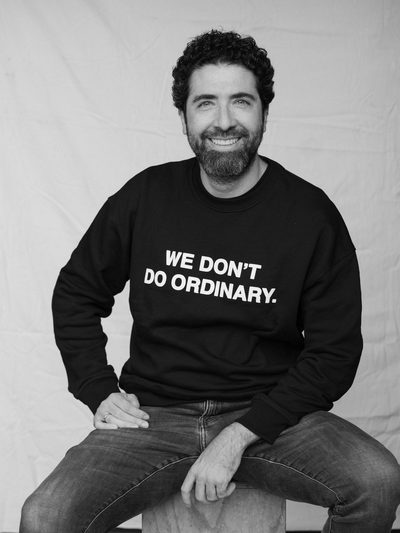

Our access is built on years of collaborative work and co-investments
A team with deep roots in Latin America and an active presence at the heart of the world's leading innovation ecosystems.

Camilo Botero
Managing Partner
27 years of experience in investments and corporate development across Colombia, Latin America, the U.S., and Southeast Asia. Institutional investment banking at Corfinsura, Bancolombia Investment Banking, and Grupo Nutresa — providing Veronorte the analytical rigor that distinguishes institutional-grade fund selection.
B.S. Management Engineering, EIA — cum laude
Master in Finance, EADA Barcelona — summa cum laude
25 years in technology, business development, and investment across the U.S., Colombia, Germany, Italy, China, and Mexico. Over a decade co-investing alongside Khosla Ventures, serving on boards, and cultivating relationships with top-tier GPs — the cornerstone of Veronorte's exclusive access to funds typically closed to new investors.
B.S. Mechanical Engineering, EAFIT — summa cum laude
MBA, University of Chicago — Booth School of Business
18 years in journalism and corporate communications across Colombia, the United States, and Spain. Background at CNN and W Radio, combined with a track record in financial institutions and startups, and travels through 60+ countries — providing Veronorte a human-centric, diverse, and purposeful lens.
B.A. Social Communication and Journalism, U. Pontificia Bolivariana
M.A. International Relations, U. Complutense Madrid — Honors
9+ years of professional experience in corporate finance, investment banking, investment analysis, and venture capital across Colombia, Latin America, and the U.S. Background at Estrategia en Acción, Grupo Sura, and investments — bringing rigorous financial analysis to Veronorte's fund evaluation process.
B.S. Management Engineering, Universidad EIA — Honors
Master in Engineering and Management, Politecnico di Torino
5+ years of professional experience in business administration, business intelligence, and portfolio analysis. Background at BTG Pactual — leveraging analytical capabilities to optimize Veronorte's operations, reporting, and data-driven decision making.
B.A. Business Administration, Universidad de los Andes
Specialization in Big Data & Business Intelligence, Universidad EIA
Relationships built over a decade at the heart of Silicon Valley
Our access to the world's premier investors isn't the result of a cold outreach strategy. It's the product of years of co-investments, board participation, and genuine relationships forged at the epicenter of the global technology ecosystem.
This gives our investors access to funds and opportunities that are not available through traditional financial intermediaries.